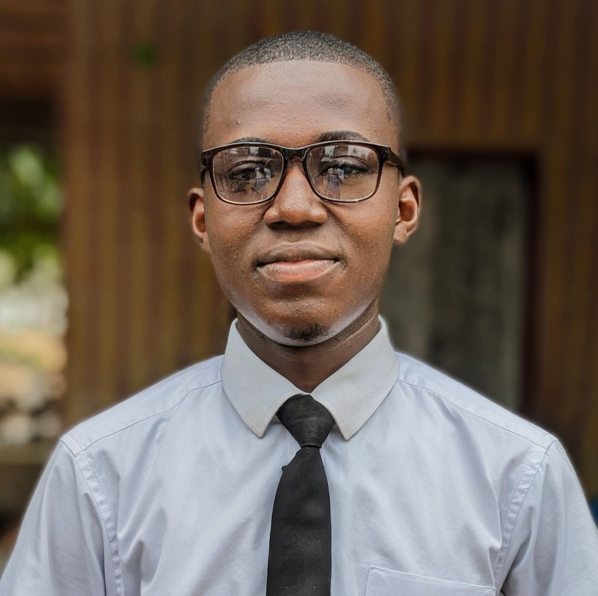

Qui suis-je
Réalisateur, Développeur web, Motion designer &VFX designer
Je suis Gabriel Katembo Maluguza, cofondateur d'une structure cinématographique emergente appelée "Nornigab Studio". Passionné par le cinéma, la technologie et l’innovation, je développe des solutions numériques modernes tout en produisant des œuvres audiovisuelles ambitieuses. Mon objectif est clair : créer des projets africains capables de rivaliser à l’international.
2015
Début des projets créatifs
15+
Projets cinéma & digital
1
Réseau social en développement (OKEAPI)
∞
Vision & ambition
Compétences techniques

Ma vision
"Construire des solutions technologiques et cinématographiques puissantes, pensées en Afrique, développées avec rigueur, et conçues pour impacter le monde."